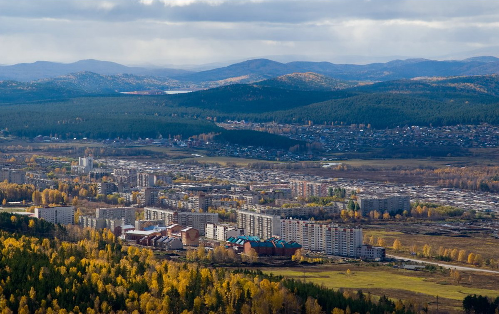
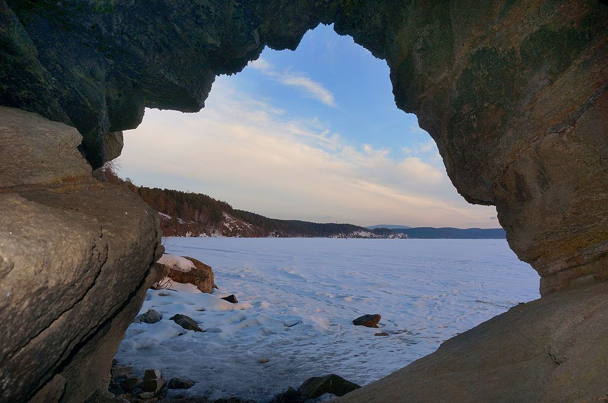

Город Миасс
Город в Челябинской области России. Административный центр Миасского городского округа. Население составляет 151 387 человек. Входит в перечень исторических городов России.
Город расположен на реке Миасс, у подножия Ильменских гор, в 96 км к западу от областного центра Челябинска. В Миасском городском округе расположен Ильменский минералогический заповедник.

Сайт города Миасс
Главная достопримечательность нашего города - это озеро Тургояк

Тургояк — жемчужина Челябинской области, второе по чистоте озеро России, признанный памятник природы.
Озеро содержит чистейшую природную воду, по качеству близкую к байкальской.
На озере найдены следы пребывания доисторических людей. Самыми знаменитыми из них являются мегалиты острова Веры.